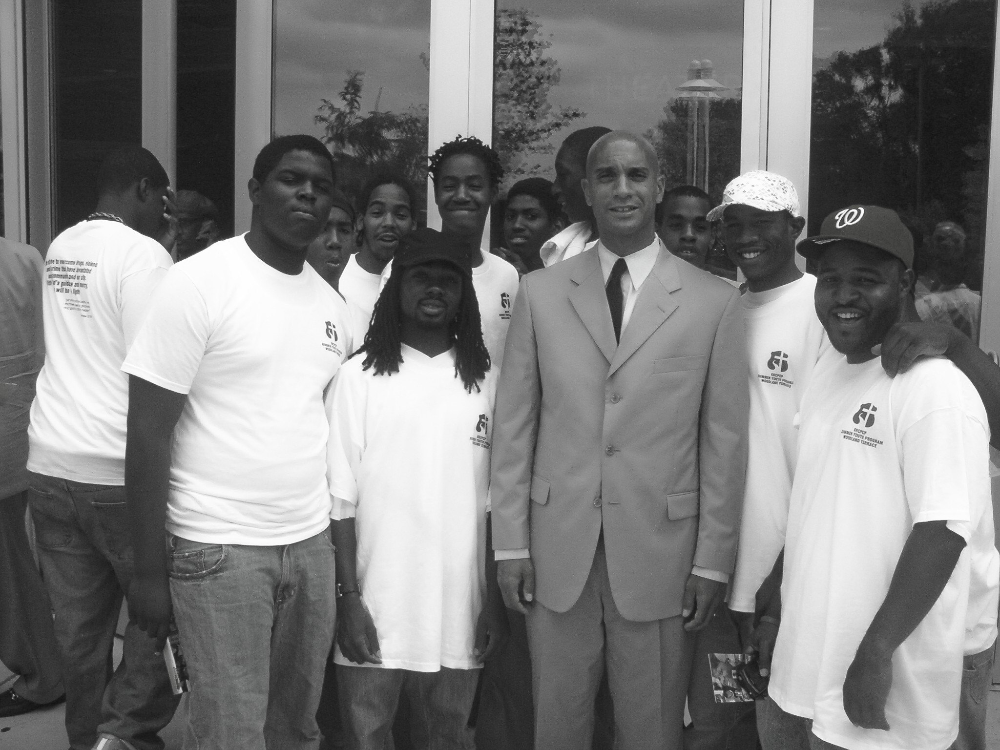
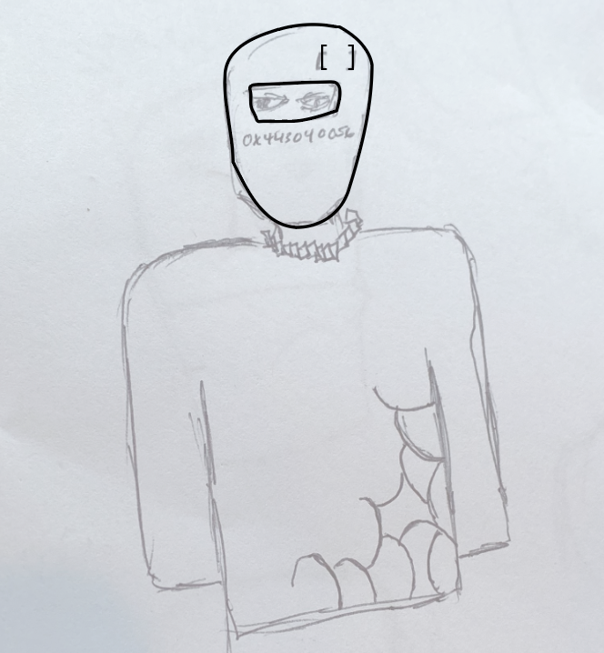

10% (sales by percentage)
help mama and pay rent
help mama and pay rent
Phase 1/2 Sustainability Fund (Direct funding for sustainability initiatives)
Phase 1/2 Black Business Patronage (Directly to Black Biz)
Phase 1/3 Community Outreach Funding
 Braxton and Trayon White with Woodland Terrace Youth Program in Southeast Washington, D.C.Phase 2/2 Sustainability Funding
ZDL Token Release + Airdrop to ZDL NFT hodlers
Phase 2/2 Black Biz
Phase 2/3 Community Outreach Funding
zero day hackrs drop + Phase 2/2 Black Biz
 [[Original]] draft of Zero Day HackrsPhase 3/3 Community Outreach Funding